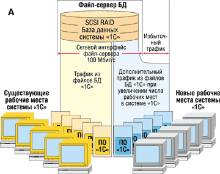
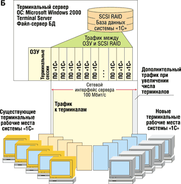

Иван Федорец,
astarot_reload@rambler.ru,
http://www.astarot.aviti.net
От файл-сервера к клиент-серверу
Речь здесь пойдет о внедрении терминальной технологии в крупной производственно-торговой организации, действующей на украинском рынке и специализирующейся на продуктах питания. Информационная система предприятия объединяет 50 рабочих мест и охватывает бухгалтерию (14 рабочих мест), экономический отдел (4 места), отдел реализации (6 мест) и ряд других небольших подразделений. На всех рабочих местах используется файл-серверная версия системы "1С:Предприятие 7.7". Объем базы данных этой системы сейчас достигает 400 Мбайт.
В качестве ОС до внедрения терминальной технологии использовались различные версии Windows - 98, Me, 2000 Professional, XP Professional. Фактически ИС состояла из файл-сервера и множества относительно автономных ПК, объединенных в локальную сеть (см. рисунок). На рабочих местах помимо модулей "1С" имелись приложения Microsoft Office XP. Файл-сервер содержал БД системы "1С" и файлы пользователей. Печатающие устройства в системе подключались локально к пользовательским ПК.
|  |
|  |
| Варианты расширения существующей ИС: путем традиционного наращивания мощности (А) и с использованием терминальной технологии (Б).
|
Один из важнейших недостатков такой организации ИС - низкий кпд. Для обеспечения приемлемой скорости работы "1С" приходилось задействовать довольно мощные компьютеры. Но, разумеется, мощность таких ПК редко используется полностью в течение всего рабочего дня - львиную долю рабочего времени вычислительная система простаивает! Заметим, что в масштабах Интернета данную проблему пытаются решить с помощью сетей распределенных вычислений (grid).
Итак, при объеме БД в 400 Мбайт и количестве пользователей системы "1С" порядка 20 старые технологии перестали обеспечивать необходимую скорость работы. При использовании файл-серверной технологии локальная сеть (100 Мбит/с на коммутаторах) уже не справлялась с трафиком, что вызывало недопустимые простои в работе операторов "1С" при выполнении рутинных запросов к БД. Для повышения производительности ЛВС требовалась большая пропускная способность сетевого интерфейса файл-сервера - коммутаторы здесь мало помогают, так как трафик аккумулируется на одном порту файл-сервера. А необходимое увеличение производительности ЛВС требует крупных затрат. Таким образом, назрела необходимость замены файл-серверной технологии на клиент-серверную.
Терминалы оказываются эффективнее
Перед организацией встала задача - обеспечить приемлемую скорость и надежность работы "1С", физическую целостность БД и пользовательских данных, эффективную схему сетевой печати, доступа к Интернету и электронной почте. Для решения имелись два варианта: клиент-серверная версия "1С" на базе SQL Server либо схема, основанная на терминальной технологии Microsoft Windows - TTW (см. рисунок).
SQL-серверный вариант системы обеспечивает должную скорость работы, но, во-первых, сильно проигрывает терминальной системе в цене, а во-вторых, не обладает рядом присущих терминальным системам полезных свойств. Фактор стоимости был одним из приоритетных, поэтому вариант с SQL Server был отвергнут.
Выбор в пользу TTW был обусловлен рядом соображений - необходимостью работы с "1С" исключительно в среде Windows; потребностью в эффективном использовании вычислительных мощностей (терминальный сервер это обеспечивает); стремлением уменьшить объем данных, передаваемых по сети. Технология TTW позволяет обойтись без дорогостоящего повышения пропускной способности сети (например, с помощью перехода на гигабитный порт). Кроме того, она продляет срок эксплуатации ПК рабочих мест - в роли терминалов компьютеры могут использоваться вплоть до их физического, а не морального устаревания, и от них не требуется высокая вычислительная мощность.
Кстати, при создании системы "с нуля" эти соображения особенно актуальны, так как компьютер, заранее спроектированный как терминал, гораздо дешевле полноценного ПК. Существуют серийно выпускаемые терминалы с предустановленным ПО, способные подключаться по протоколам RDP и ICA. Подобные решения предлагают многие производители, в том числе в СНГ: это, например, московская компания K-Systems (http://www.k-systems.ru) и Kron из Винницы (http://www.kron.vinnica.ua).
При проектировании терминальной системы "с нуля" можно сэкономить и на том, что в таком случае оказывается достаточно канала 10 Мбит на рабочее место. К тому же терминальная технология повышает надежность всей ИС, гибкость при развитии и масштабировании системы: для увеличения производительности и надежности системы достаточно модернизировать лишь серверы, а не весь компьютерный парк. Обновление терминального сервера сказывается сразу на всех рабочих местах, можно утверждать, что эффективность такой модернизации будет стопроцентной, при этом не требуется модернизации каждого рабочего места, как в случае с автономными ПК.
Еще одно соображение - доступность рабочей среды. В терминальной системе пользователь, зарегистрировавшись, попадает на "свое рабочее место" с любого терминала со своими правами доступа, программами, принтерами и т. п., возможно и администрирование терминального сервера с любого терминала. При выходе терминала из строя пользователь попросту переходит на другой терминал, регистрируется и снова получает свой "рабочий стол", продолжая работу с того места, на котором остановился на момент сбоя - он не только не теряет данные, но даже сохраняет открытые окна программ!
Технология не исключает и возможности создания гибридного рабочего места - на "полноценном" ПК можно установить локальную среду пользователя и терминальную клиентскую программу. Это расширяет функциональность, поскольку в качестве локальной ОС могут выступать Windows, MacOS, FreeBSD, Linux, Solaris и т. д.
Дополнительное достоинство TTW - экономия на антивирусном ПО. Достаточно установить средство защиты на точки входа данных в систему или на терминальный сервер, тогда как в традиционной системе оно требуется на каждой автономной рабочей станции. Можно сэкономить и на другом ПО, устанавливаемом на терминальный сервер, если в его лицензии не оговорена такая форма инсталляции и использования (впрочем, не следует надеяться на такую экономию с ПО Microsoft).
В завершение перечня достоинств TTW отметим также легкость и малое время перехода на терминальную технологию - в частности, возможен поэтапный вариант перехода существующей ИС на TTW.
Варианты TTW
Системы TTW могут использовать протоколы RDP и ICA. Протокол ICA жестко привязывает терминальное решение к продукту Citrix фирмы MetaFrame, но в рассматриваемом нами случае практические преимущества от использования терминального сервера Citrix не оправдывали стоимости такого варианта. Между тем TTW на базе протокола RDP входит в состав Microsoft Windows 2000 Server.
Далее, в новой ИС одновременно могут существовать три вида рабочих мест - терминалы; ПК с локальной средой пользователя и с терминальным доступом; автономные ПК с Windows 2000 Pro и доступом к файл-серверу.
Первая категория, в свою очередь, может включать терминалы без локальной среды пользователя, бездисковые и аппаратные терминалы, а также терминалы с локально установленной бесплатной ОС FreeBSD или Linux и с терминальном клиентом rdesktop, автоматически загружаемым при регистрации пользователя. Бездисковые терминалы выгодны при внедрении ИС "с нуля" - они требуют наличия сервера удаленной загрузки ОС и сервера X (при использовании Unix). Аппаратные терминалы бывают как бездисковые, так и с наличием flash-диска, содержащего ОС (Unix или Windows CE .NET) и терминальное ПО. Терминалы с FreeBSD или Linux наиболее выгодны при переводе существующего рабочего места на TTW.
ПК с локальной средой пользователя (Windows 2000 Professional) и терминальным клиентом используются при необходимости подключения кассового аппарата к COM-порту: терминальный механизм rdesktop не поддерживает переназначение портов (remapping).
Перечисленные выше достоинства TTW присущи как RDP-, так и ICA-системам, но из-за дешевизны RDP технологии при соответствии заданным требованиям было выбрано и описывается решение именно на RDP-протоколе.
Преодоление ограничений
К недостаткам терминальной системы можно отнести взаимную зависимость пользователей, пользующихся вычислительными ресурсами терминального сервера. Это важно, если один или несколько пользователей запускают ресурсоемкие приложения, - терминальные рабочие места остальных пользователей тут же снижают производительность. Заметим, что данной проблемы можно избежать при грамотном проектировании системы.
Выше было сказано о проблеме низкого кпд при традиционной организации ИС, но при переводе уже существующей традиционной ИС на TTW повышения кпд не происходит: ведь в терминалы превращаются полноценные ПК, которые, вообще говоря, справлялись со своими задачами. Зато появляются новые возможности, например, связанные с сетевыми системами. Так, можно использовать дисковое пространство терминальных клиентов для хранения данных посредством NFS, а ATA-интерфейсы, в свою очередь, используют высвобожденную вычислительную мощность процессора. Но более эффективным и производительным будет комбинированное использование на рабочих местах с Windows 2000 Professional локальных программ и терминальных сессий "1С". Терминальный сервер здесь загружен только по необходимости, при этом эффективно используется и локальная мощность ПК.
Надежность терминальной ИС
Надежность ИС включает обеспечение физической целостности данных, постоянной готовности системы к работе и минимизацию времени, необходимого на возврат системы в рабочее состояние.
Казалось бы, централизация системы всегда снижает надежность, но ведь файл-серверная система фактически уже централизована! При работе пользователей в традиционной системе (будем так называть систему с автономными ПК и файл-сервером, объединенными сетью) надежность снижается еще и из-за ошибок при передаче данных по сети. Между тем в терминальной системе реальные данные по сети практически не передаются, трафик включает лишь сведения о клавиатурном вводе и изменении экрана (но ошибку при вводе пользователь всегда может видеть).
В традиционной системе данные БД обрабатываются автономными ПК, комплектующие которых обладают средними показателями надежности. Можно считать, что общая надежность физической целостности базы данных "1С" равняется надежности рабочего места, умноженной на вероятность потери данных в сети.
В терминальной системе обрабатываемые данные не выходят за пределы системы терминальный сервер - сервер БД. В нашем случае терминальный сервер был объединен с сервером "1С" и файл-сервером. Данные из такого объединенного сервера не выходят вообще, следовательно, они обрабатываются только высоконадежным серверным оборудованием.
Другое средство повышения надежности - использование кластера терминальных серверов. Это минимизирует время на возврат ИС в рабочее состояние при выходе из строя одного терминального сервера: пользователи снова регистрируется на другом терминале и продолжают работу. Кроме того, кластерное решение позволяет проводить профилактические работы на терминальных серверах, не останавливая работы всей ИС.
Система Windows 2000 Advanced Server поддерживает двухузловые кластеры, Windows 2000 Datacenter Server - до четырех узлов в кластере, Windows 2000 Server не поддерживает кластеризацию.
Достаточно обеспечить бесперебойное питание серверного узла - тогда даже при отсутствии ИБП на каждом рабочем месте в худшем случае будут потеряны только данные о последних символах клавиатурного ввода, а время на восстановление ИС будет даже меньше, чем в традиционной системе: в терминальной среде пользователю не надо специально восстанавливать свою рабочую обстановку на "рабочем столе" компьютера, это делается автоматически. Защищать с помощью ИБП нужно только те рабочие ПК, которые должны работать непрерывно, например, рабочее место кассира. На менее оперативных рабочих местах, особенно при бездисковых терминалах, можно сэкономить на ИБП.
Повышению надежности всей ИС способствует использование аппаратных терминалов с flash-дисками - при этом уменьшается количество механических устройств.
Отметим еще, что ОС FreeBSD и Linux менее подвержены вирусным атакам: число вирусов для платформы Unix несоизмеримо меньше, чем для Microsoft.
ПО в терминальной системе
Существует два варианта лицензирования для Windows 2000 Terminal Server - "на сервер" и "на рабочее место". В первом случае имеется фиксированное число одновременно подключенных терминалов любого типа, а лицензии хранятся на сервере. Во втором случае на каждом терминале хранятся свои лицензии - это оптимальный режим для подключения к кластеру терминальных серверов.
Лицензирование на подключение в действительности включает две лицензии - на доступ к ресурсам сервера Microsoft Windows 2000 Server и на доступ к терминальной службе. Клиентская лицензия встроена в Windows 2000 Professional - для терминала с этой ОС терминальную лицензию покупать не надо.
Сэкономить на ПО поможет установка на терминалы бесплатных ОС, таких, как Linux или FreeBSD. Экономия выражается в разности между стоимостью Windows 2000 Professional и лицензии на терминальный доступ. Правда, эта экономия гораздо менее существенна, чем зачастую предполагается.
Бытует мнение, что стоимость ПО для терминальной ИС снижается, поскольку программы устанавливают лишь однажды, на терминальный сервер. К сожалению, это миф. В описываемой системе львиную долю стоимости ПО составляют продукты Microsoft, в частности, Office XP Standard. При покупке этих продуктов приходится платить не за копии ПО, а за возможность использования. При установке ПО Microsoft на терминальный сервер необходимо приобретать лицензии по числу терминальных пользователей, работающих с этим ПО, и может оказаться, что суммарная стоимость лицензий на ПО для терминальной ИС будет выше, чем для традиционной системы с автономными компьютерами. Нецелесообразно устанавливать Office XP на терминальный сервер. Лучше, к примеру, локально ставить Office XP на отдельных машинах поверх ОС Windows 2000 Professional. В случае терминала на базе FreeBSD или Linux можно инсталлировать среду типа KDE или Gnome и офисный пакет, к примеру, KOffice или OpenOffice - эти приложения "понимают" форматы DOC и XLS, правда, требуют дополнительной настройки. OpenOffice входит в состав дистрибутива ALT Linux Junior.
Перед переходом на TTW важно определить состав ПО, необходимого на каждом рабочем месте. Для некоторых пользователей терминальная рабочая среда неприемлема из-за специфики программ, с которыми они работают. Так, некоторые системы "клиент-банк" работают только в режиме удаленного доступа к сети. Кроме того, все ПО необходимо протестировать на корректность работы в терминальной среде. Программы Microsoft Office XP и Outlook Express в терминальной среде работают так же, как и на локальных машинах, корректно сохраняя пользовательские настройки.
Очень полезным может оказаться бесплатный набор приложений 602PC Suite Office. Особенно приятно, что размер его инсталляционного пакета лишь ненамного превышает 15 Мбайт. Пакет 602Office, корректно работающий в терминальной среде, совместим с файлами DOC и XLS и к тому же включает мощный редактор изображений. Серьезный недостаток, замеченный при эксплуатации табличного редактора, входящего в 602PC Suite, заключается в отличии нумерации объединенных ячеек от программы Microsoft Excel - в результате при открытии файла, созданного в Excel с использованием объединенных ячеек и формул, сдвиги в нумерации объединенных ячеек приводят к неправильному расчету формул.
Реализация системы
Аппаратное обеспечение
Терминальный сервер, совмещающий также функции сервера БД системы "1С" и файл-сервера, оснащен двумя процессорами Pentium III 1 ГГц; 1,2 Гбайт памяти ECC SDRAM; тремя жесткими дисками Fujitsu SCSI емкостью по 160 Гбайт, организованными в RAID-5; адаптером LAN Intel Express 100.
Как известно, работа SCSI-интерфейса не нагружает процессор, в отличие от ATA-интерфейса. Массив RAID уровня 5 при достаточной надежности обеспечивает высокую скорость чтения и записи. Семимесячный опыт работы терминальной ИС показал, что при одновременной работе 20 пользователей на таком терминальном сервере расходуется в среднем 750 Мбайт ОЗУ, а загрузка процессоров в среднем составляет 60%.
В качестве терминалов используются простенькие ПК на базе Pentium 133 МГц, с 48 Мбайт ОЗУ и жесткими дисками по 2 Гбайт, а также более мощные - на базе Celeron 1 ГГц, со 128 Мбайт ОЗУ и 20-Гбайт жесткими дисками. Терминалы работают с приемлемой скоростью даже на участках сети с пропускной способностью 10 Мбит/с. В конфигурации на базе Pentium 133 бывают заметны фазы перерисовки экрана. Оптимальной для данных функций будет конфигурация с Celeron 300 МГц c 64 Мбайт ОЗУ. Сейчас фирма VIA выпускает высокоинтегрированные решения на базе процессорного ядра C3, на которых можно самостоятельно построить терминал. На платформах VIA выпускаются и терминалы компаний K-Systems и Kron. Преимущества платформы от VIA - компактность (размеры системной платы 170х170 мм).
При создании терминала на основе Unix необходимо учитывать, что не все сетевые карты работают с этой ОС (в числе совместимых - продукты 3Com, Intel, Realtek, SMC).
Сетевая печать
Существует несколько вариантов организации печати для терминальной системы. Если принтер подключен к терминалу с ОС FreeBSD или Linux, то терминал оснащается системой SAMBA, а печать идет через драйвер, установленный на терминальном сервере или на той системе, которая отправила задание на печать. Можно использовать принт-серверы.
Еще один вариант - подключение принтеров к компьютерам с Windows, ведь некоторые принтеры имеют драйверы только для этой ОС.
Программная часть
В качестве терминального клиента для FreeBSD и Linux в данном проекте была выбрана система rdesktop, входящая в стандартную поставку пакетов FreeBSD. Она стабильно функционирует на FreeBSD версий с 4.5 по 4.8, а также на ALT Linux Junior версий 1.1 и 2.0.
Клиент rdesktop использует 4-ю версию протокола RDP и не поддерживает режимы с числом цветов более 256. Для офисного рабочего места это может оказаться неприятным ограничением. Из более серьезных недостатков упомянем отсутствие функции передачи локальных портов терминала серверу (port remapping). Данный недостаток приводит к невозможности работы с устройствами на COM-портах терминалов - кассовыми аппаратами и модемами.
Неудобства терминалов на FreeBSD и Linux
В FreeBSD пользователь не имеет права перегружать или выключать ПК - это доступно только с учетной записи администратора. В ALT Linux Junior такого ограничения нет, кроме того, функции выключения и перезагрузки реализованы здесь с графическим интерфейсом.
Далее, при работе на машине только как на терминале недоступны дисководы (даже если они физически присутствуют). Нужно тщательно планировать ПО, которое будет использоваться на рабочем месте. Если требуется ПО, защищаемое, например, ключом HASP, установленным локально, или ключевой дискетой, то на терминал с FreeBSD и rdesktop вы его, возможно, уже не установите.
В процессе создания терминальной ИС была выявлена проблема учета HTTP-трафика пользователей. Большинство учетных систем дифференцируют пользователей по IP-адресу, а в терминальной системе весь HTTP-трафик идет с IP-адреса терминального сервера. Эта проблема решается организацией авторизованного доступа и учета трафика не по машинам, а по пользователям. Как вариант можно предложить использование кэширующего прокси-сервера SQUID для авторизованного доступа в Интернет. Это средство можно устанавливать в FreeBSD, Linux и Windows. По установке и настройке SQUID в Интернете существует много материалов (см., например, http://squid.opennet.ru).
У SQUID немало достоинств. Данный сервер бесплатен, а в его функции входит аутентификация пользователей внешней программой - это обеспечивает свободу в выборе метода аутентификации. К примеру, можно организовать автоматическую проверку прав пользователей по их именам Microsoft Windows домена. SQUID - кэширующий сервер, при установке на стороне предприятия он позволяет снизить объем трафика на внешнем канале в Интернет. Поскольку SQUID - стандартное, проверенное временем решение, для него разработано достаточно дополнительных модулей, в том числе и мощных программ для сбора статистики по анализу журналов. В нашем проекте для сбора статистики SQUID использован пакет SARG.
Более полную информацию по настройке FreeBSD-машины как терминала, а также по настройке принтера, подключенного локально к FreeBSD-терминалу, можно получить на сайтах http://astarot.aviti.net (здесь приведено решение проблем, с которыми столкнулся автор статьи в процессе настройки FreeBSD-терминалов) и http://opennet.ru (статьи, форум по FreeBSD).
Итоги и перспективы
В процессе планирования и внедрения терминальной ИС была выявлена необходимость в следующих предварительных шагах:
- тестовые испытания ПО, эксплуатируемого в ИС в условиях многопользовательской терминальной среды;
- расчет стоимости ПО для аналогичной по мощности традиционной ИС в сравнении с терминальной;
- поиск аналогов ПО для снижения суммарной стоимости ПО или для обеспечения корректной работы в терминальной среде;
- расчет стоимости системы как по традиционной схеме ИС, так и по терминальной;
- анализ возможности перехода Unix-терминалов на свободно распространяемое ПО с целью снижения суммарной стоимости ИС;
- анализ возможного перехода на бездисковые терминалы;
- анализ построения кластера терминальных серверов.
В описанном проекте предприятие, внедрившее терминальную ИС, получило эффективное масштабируемое решение при минимальных затратах. Примечательно, что терминальная система может сосуществовать и с традиционными автономными ПК рабочих мест - это дает возможность проводить постепенное внедрение TTW и обеспечивает большую гибкость всей системы, поскольку одновременно используются преимущества и традиционной, и терминальной систем.
Создание кластера терминальных серверов позволяет пропорционально повышать производительность всей системы по мере увеличения числа входящих в него серверов. Нарастить производительность всей ИС при наличии одного терминального сервера можно с помощью увеличения объема ОЗУ, замены или добавления процессоров и т. п. В терминальной системе соблюдается принцип масштабируемости по всем важным параметрам, что позволяет повышать эффективность за счет экстенсивного расширения системы.
При использовании аппаратных терминалов мы экономим на вычислительной мощности рабочих мест. В случае создания системы "с нуля" можно создавать ИС на базе бездисковых терминалов FreeBSD, сэкономив на стоимости жестких дисков, но тогда надо учитывать стоимость загрузочного сервера плюс стоимость X-сервера, обслуживающего терминальных клиентов. В случае удаленной загрузки ОС также растут затраты на сетевые карты. Помимо аппаратной стоимости ИС возрастает также нагрузка на сеть из-за трафика между X-сервером и обслуживаемыми им терминальными клиентами.
Удаленная загрузка FreeBSD позволяет использовать корневую файловую систему, монтированную по NFS, что снижает требования к объему оперативной памяти бездискового терминала, но может повысить нагрузку на сеть.
Еще один перспективный вариант использования терминальной технологии - удаленные рабочие места в распределенных сетях (например, на базе технологии VPN). Практический опыт показывает, что для этого лучше подходят системы на основе Citrix, поскольку они используют гораздо меньшую полосу пропускания канала связи терминал - сервер, чем системы на базе RDP.